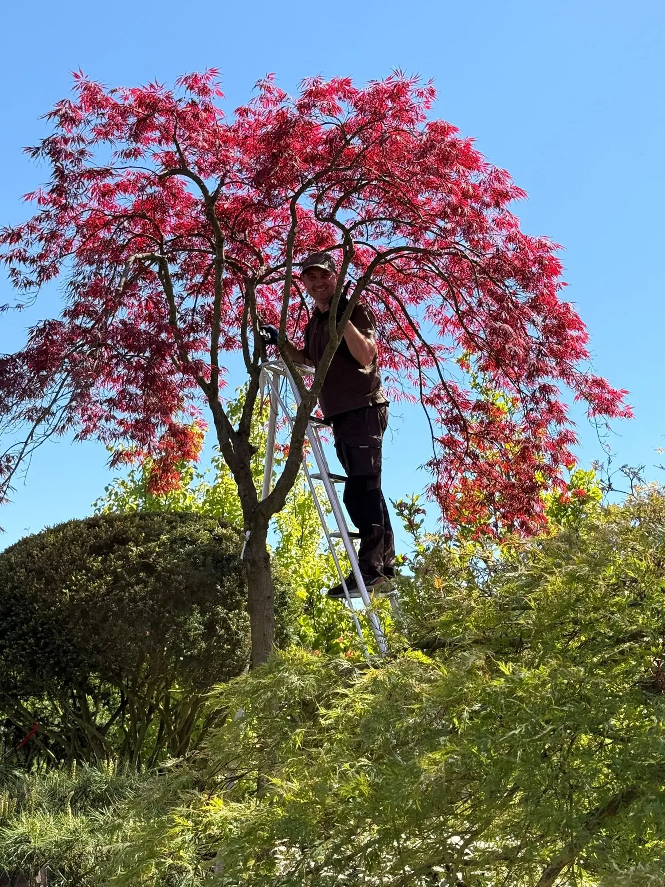

Japanischer Ahorn in der Schweiz: leicht schneiden, bevor die Krone kippt.
Japanische Ahorne reagieren empfindlich auf falsche Eingriffe. Zu dichter Wuchs, alte trockene Aeste und fehlende Luft im Inneren machen die Krone schwer und unruhig. Ziel ist nicht ein harter Schnitt, sondern eine lesbare, leichte Architektur.
Worauf es zuerst ankommt.
- Acer palmatum und Dissectum-Gruppe.
- Totholz, Kreuzungen und zu dichte Innenkronen entfernen.
- Form mit Respekt vor Wuchsrichtung und Jahreszeit.
Der erste Schritt ist kein pauschales Angebot. Senden Sie drei brauchbare Fotos, damit Viktor beurteilen kann, ob der Baum fuer sorgfaeltige Formung oder Rettung geeignet ist.
Fotos senden - kostenlose Einschätzung
Kurze Antworten.
Wann wird japanischer Ahorn geschnitten?
Der Zeitpunkt haengt vom Ziel, Zustand und Standort ab. Deshalb entscheidet Viktor nach Fotos, nicht nach einer pauschalen Regel.
Kann man einen alten Ahorn noch retten?
Manchmal ja. Entscheidend sind Vitalitaet, Aststruktur und ob die Krone noch sinnvoll geoeffnet werden kann.
Aus gewöhnlichen Bäumen besondere Gartenformen entwickeln.
Senden Sie mir drei Fotos. Ich prüfe, welche künstlerische Baumformung, Kronenstruktur-Korrektur oder Pflegefolge zu Ihrem Baum passt - ohne Schnell-Schnitt und ohne falsche Versprechen.